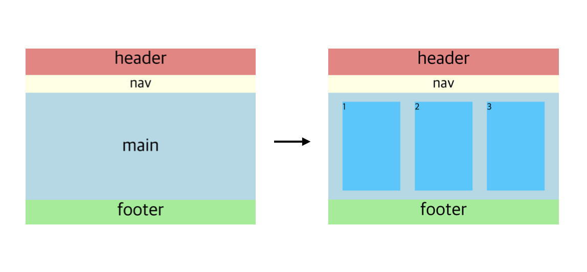
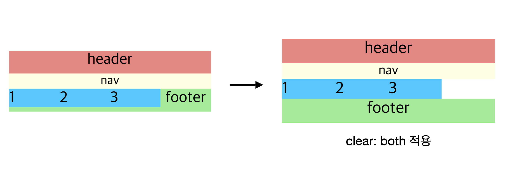

float
float
float는 일반적은 요소들의 흐름에서 벗어나 “둥” 떠있는 것처럼 동작을 한다
MDN의 float에 대한 설명을 참조하자면 다음과 같다
MDN - float
CSS 속성(property) float은 한 요소(element)가 보통 흐름(normal flow)으로부터 빠져 텍스트 및 인라인(inline) 요소가 그 주위를 감싸는 자기 컨테이너의 좌우측을 따라 배치되어야 함을 지정합니다.
보통 흐름으로부터 빠져 자신의 부모를 기준으로 좌우측으로 정렬이 되는데 이때 어떤 부모요소의 자식요소들이 모두 float로 지정이 되었다면 그 부모요소는 자신의 높이를 잃어버리게 된다(부모의 높이가 지정되어 있지 않고 내부 요소들의 내용에 따라 높이가 정해지는 경우)

왼쪽의 레이아웃에서 main 영역에 3개의 요소를 그림과 같이 배치하려고 할때 float를 이용한다면 파란색의 main 영역이 사라지는 것을 볼 수 있다

왼쪽의 레이아웃은 main 내부의 요소들을 float로 변경했을때의 현상이다 footer의 레이아웃까지 무너지는 것을 볼 수 있다(float가 가리는 텍스트는 옆으로 빠져나옴 “footer”라는 텍스트는 가려지지 않고 옆으로 빠짐) 이때 footer에 clear: both;를 사용하게 되면 float가 footer에 영향을 미치는 것을 막을 수 있다
하지만 문제는 여전히 main의 영역이 사라졌다는 것이다 자식요소의 영역만큼 영역을 차지하는 부모요소는 자식요소가 모두 float로 지정이 되면 높이를 잃어버린 것처럼 동작한다
이러한 문제를 해결하기 위한 방법으로 5가지정도가 존재한다
▷ 1. clearfix
main의 내용과 관련없는 clearfix라는 클래스의 div요소를 임의로 생성한다
<main>
<div class="group group1">1</div>
<div class="group group2">2</div>
<div class="group group3">3</div>
<div class="clearfix"></div>
</main>
main .clearfix {
clear: both;
}
하지만 의미없는 태그로 코드상으로 보여지기도 하므로 좋은 방법이 아니다
▷ 2. 가상 요소 선택자
위에서 clearfix의 방법을 가상 요소 선택자 ::after를 이용해서 작성하는 방법이다
- 가상 요소 선택자로 작성된 content는
display가inline이다clear: both는block요소에만 적용되기 때문에display: block을 해준다
<main>
<div class="group group1">1</div>
<div class="group group2">2</div>
<div class="group group3">3</div>
</main>
main::after {
content: "";
clear: both;
display: block;
}
▷ 3. overflow: hidden;
부모요소에 overflow: hidden를 이용해서 작성하는 방법
- 원래
overflow: hidden은 넘치는 요소를 숨김처리하는 역할을 하기 때문에 만약 자식요소가 부모요소의 크기를 넘어서게 되면 보이지 않게 되는 큰 단점이 존재한다 - BFC(Block Format Context)를 생성하게 된다 → 자신만의 독립된 영역을 가지게 된다
BFC가 생성되는 조건
- 루트(root) 요소일 때
- html는 웹 문서의 시작을 알리는 최상위 요소이다. 따라서 기본적으로 하위 요소들은 독립적인 레이아웃을 가질 수 있도록 되어 있다. 플로팅(Floating) 되었을 때
- 하위 요소가 선택적으로 float 속성 값을 none이 아닌 값을 가지게 되면 독립적인 레이아웃 환경을 갖는다.
- position 속성이 absolute 또는 fixed로 적용되어 있을 때
- 하위 요소가 선택적으로 position 속성 값을 absolute 또는 fixed 값을 가지게 되면 독립적인 레이아웃 환경을 갖는다.
- display 속성이 inline-block으로 적용되어 있을 때
- 하위 요소가 inline-block을 갖게되면 주변 inline 요소와 관계가 무너지면서 독립적인 공간을 형성하게 되므로 역시 독립적인 레이아웃 환경을 갖는다.
- overflow 속성의 값이 visible 이외의 값으로 적용되어 있을 때
- overflow 속성 값이 visible 이외의 값을 갖는 다는 것은 공간에 대한 크기 정의를 했다고 볼 수 있다. 그렇게 때문에 독립적인 공간을 형성한 것으로 볼 수 있으며 따라서 BFC를 요건을 가지고 있다.
main {
overflow: hidden;
}
▷ 4. flow-root
display: flow-root를 사용해서 작성하는 방법
- 비교적 최근에 나온 속성이기 때문에 오래된 브라우저, IE에서는 작동이 되지 않는다
- 부모요소에 적용한다
main {
display: flow-root;
}
▷ 5. 부모요소의 float
자식요소가 모두 float로 지정되었을 때 부모요소까지도 float로 지정해주는 방법
- 부모의 float를 해제해 주어야 하므로 좋은 방법은 아니라는것이 개인적인 생각이다
main {
float: left;
}